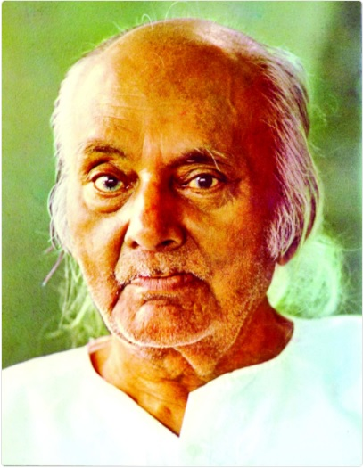

The national poet of Bangladesh
Rebel poetHe was born into a Bengali Muslim Kazi family and was the second of three sons and a daughter. Nazrul's father Kazi Faqeer Ahmed was the imam and caretaker of the local Pirpukur mosque and mausoleum of Haji Pahlawan.[26] Nazrul's mother was Zahida Khatun. Nazrul had two brothers, Kazi Saahibjaan and Kazi Ali Hussain, and a sister, Umme Kulsum. Nazrul studied at a maktab and madrasa, run by a mosque and a dargah respectively, where he studied the Quran, Hadith, Islamic philosophy, and theology. |
 |
Awesome WriterNazrul grew close to other young Muslim writers, while working at the Bengali Muslim Literary Society, including Mohammad Mozammel Haq, Kazi Abdul Wadud, and Muhammad Shahidullah. Nazrul and Muhammad Shahidullah remained close throughout their lives. He was a regular at the social clubs for Calcutta's writers, poets, and intellectuals such as the Gajendar Adda and the Bharatiya Adda. Nazrul did not have the formal education of Rabindranath and as a result his poems did not follow the literary practices established by Rabindranath. Due to this he faced criticism from followers of Rabindranath. |
|
From the University of Calcutta for his
working in Bengali Literature.
One of the highest civilian honors of
the Republic of india.
Conferred the title by the Goverment
of Bangladesh.
Bangladesh's highest civilian honors.
angladesh's highest civilian honors.